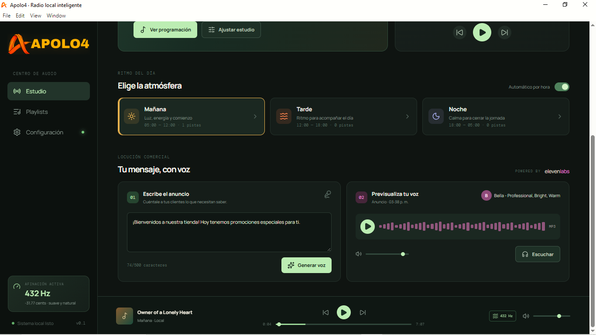

Programa por momento
Organiza tu música en playlists de Mañana, Tarde y Noche. Activa el cambio según la hora o elige el ambiente manualmente.
Música original, playlists por hora y anuncios con voz en un solo estudio creado para el comercio.
Apolo4 convierte tu computadora en una estación sencilla para ambientar el negocio y comunicar sus promociones.
Organiza tu música en playlists de Mañana, Tarde y Noche. Activa el cambio según la hora o elige el ambiente manualmente.
Escribe el mensaje de la tienda y prepara anuncios con las voces disponibles en tu cuenta ElevenLabs.
Gestiona música local, controla el volumen y sigue la pista desde una barra de reproducción integrada.

Separa las pistas por energía y momento. Apolo4 mantiene la programación en el mismo lugar.
Luz, energía y comienzo.
Ritmo para acompañar el día.
Calma para cerrar la jornada.
El paquete incluye una selección de 48 horas de música original producida con apoyo de inteligencia artificial para ambientar locales comerciales.
Una alternativa a depender únicamente de catálogos comerciales con pagos recurrentes. Recibes las pistas y un certificado que describe la licencia de uso concedida para el negocio.
Conoce el alcance de la licenciaRedacta una promoción, elige una voz en español disponible en tu cuenta de ElevenLabs y crea una locución para reproducir en el local.
La conexión a ElevenLabs requiere una API Key y está sujeta al plan, límites y cargos de esa plataforma.
Para un negocio que quiere ambientar su espacio y comunicar sus promociones desde una misma estación.
El certificado que acompaña la colección identifica el material entregado y documenta el uso comercial interno autorizado por Apolo4, de acuerdo con los derechos que puede conceder y las condiciones del documento.
La comunicación de música al público en un local puede involucrar derechos u obligaciones distintas según el país, el repertorio y los titulares. Por eso, el certificado no debe entenderse como una exención universal de licencias o pagos a terceros.
Consultar la Ley de Derechos de Autor de Costa Rica en WIPO Lex Antes de usar música en espacios abiertos al público, confirma el alcance aplicable a tu negocio con el certificado y la normativa local.La licencia del software Apolo4, una colección de 48 horas de música original producida con apoyo de IA y un certificado que describe el alcance de uso comercial interno concedido.
No promete una exención universal. Acredita el alcance de licencia sobre las pistas suministradas por Apolo4. Las reglas de comunicación pública y los derechos de terceros pueden depender del país, el repertorio y los titulares. Revisa el certificado y la normativa local antes de la difusión en público.
Solo para crear locuciones con ese servicio. Se conecta con tu propia API Key; la cuenta, el plan y los cargos de ElevenLabs son independientes del precio del paquete Apolo4.
El reproductor está pensado para reproducir los archivos desde el equipo del negocio. La música de tu computadora no se sube a Apolo4.
Sí. Crea playlists de Mañana, Tarde y Noche y activa la programación automática o cambia el ambiente desde el estudio.